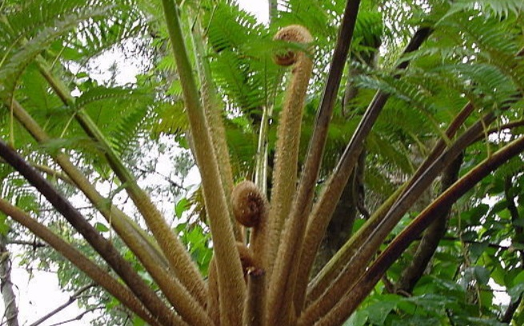

<!--
  Generated template for the HomePage page.

  See http://ionicframework.com/docs/components/#navigation for more info on
  Ionic pages and navigation.
-->
<ion-header>

  <ion-navbar>
    <button ion-button menuToggle>
      <ion-icon name="leaf"></ion-icon>
    </button>
    <ion-title>Home</ion-title>
  </ion-navbar>

</ion-header>


<ion-content no-padding no-margin>

    <ion-slides pager="true" >
        <ion-slide >
            
        </ion-slide>
        <ion-slide >
            
        </ion-slide>
        <ion-slide >
            
         </ion-slide>
    </ion-slides>

<ion-card>
  
  <div class="card-title">São Paulo</div>
  <div class="card-subtitle">41 Listings</div>
</ion-card>

</ion-content>
